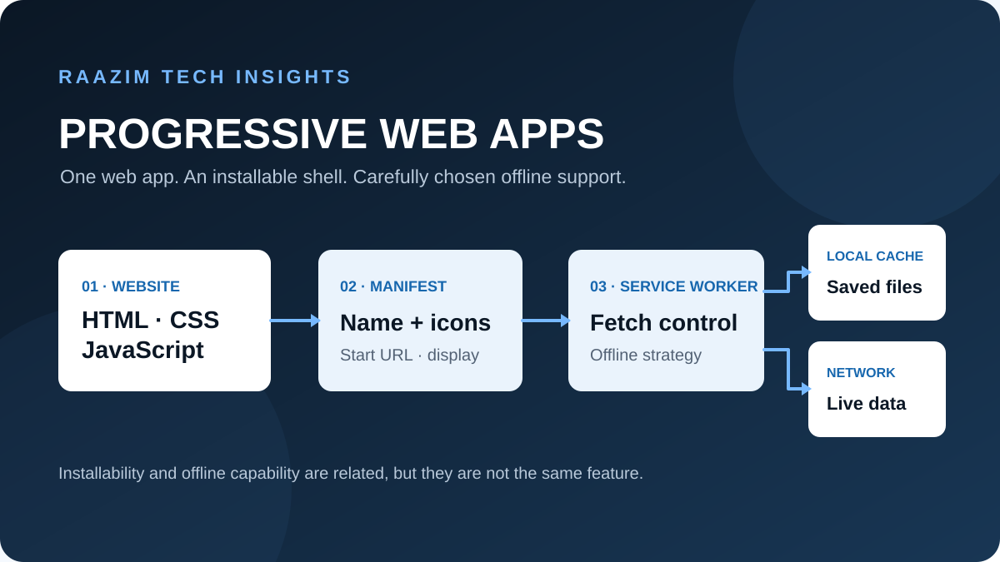
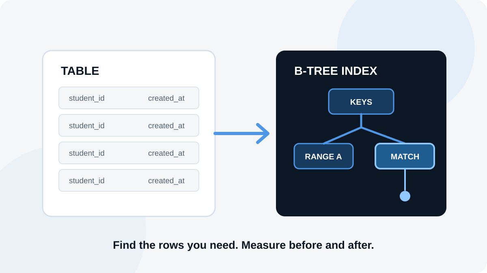
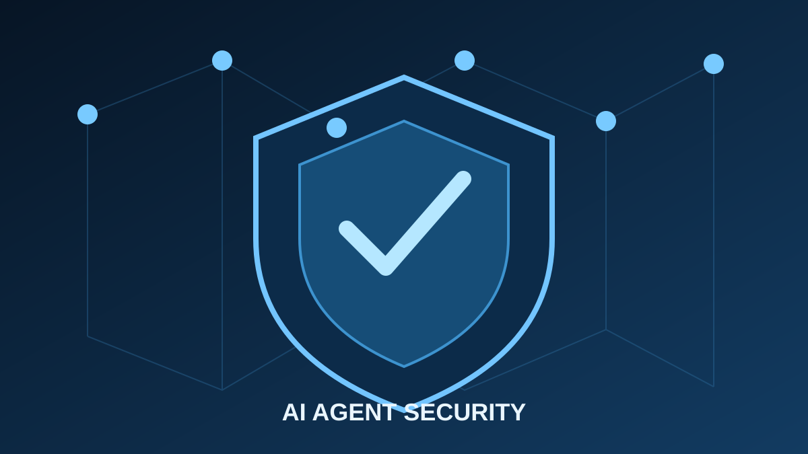
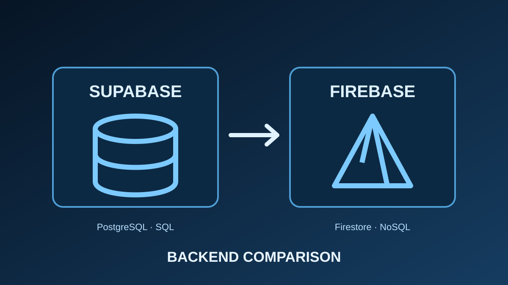

Web Development
Build an installable, offline-aware website with a manifest, service worker, practical caching strategies, and a testing checklist.
November 24, 202611 min read
Read article →

Database & Backend
Learn how PostgreSQL indexes work, choose B-tree, composite and partial indexes, read query plans, and avoid over-indexing.
November 23, 202611 min read
Read article → Artificial Intelligence
Artificial IntelligenceA practical guide to AI agents, how they differ from chatbots, where they help, and the controls businesses need before putting them to work.
November 23, 20268 min read
Read article → Web Development
Web DevelopmentUnderstand coding agents, harness engineering, code review, sandboxing, and the workflow that keeps AI-assisted development reliable.
November 23, 20269 min read
Read article →
CybersecurityA practical security guide for teams building AI agents that read documents, call APIs, access databases, or change business data.
November 23, 202610 min read
Read article →
ProgrammingCompare PostgreSQL and Firestore, authentication, security rules, realtime features, pricing models, and the workloads each platform suits.
November 23, 202611 min read
Read article → Cybersecurity
CybersecurityProtect customer accounts and business data with HTTPS, secure authentication, access controls, backups, updates, and monitoring.
November 23, 20269 min read
Read article → No articles match that search. Try another keyword or category.